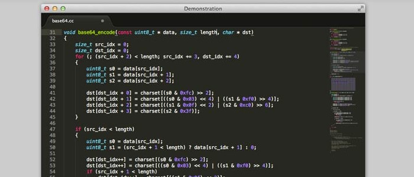

LibreOffice
En este curso utilizaremos LibreOffice para las unidades de ofimática. LibreOffice es una poderosa suite de oficina; su interfaz limpia y sus potentes herramientas permiten dar rienda suelta a tu creatividad y hacer crecer tu productividad. LibreOffice incorpora varias aplicaciones que lo convierten en una de las más potentes suite de oficina Libre y de Código Abierto del mercado: Writer, el procesador de textos, Calc, la hoja de cálculos, Impress, el editor de presentaciones, Draw, aplicación de dibujo y diagramas de flujo, Base, base de datos e interfaz con otras bases de datos, y Math para la edición de fórmulas matemáticas.
El paquete LibreOffice está instalado en todos los equipos del aula de informática, por lo que si en casa utilizáis cualquier otro paquete, os recomiendo que instaléis este igualmente, para así trabajar con la misma versión en casa.
Descarga LibreOffice
Sublime Text

Para el tema “Diseño y Edición de Contenidos Web” os recomiendo utilizar el programa de edición de texto Sublime Text.
Sublime Text es un editor de texto y editor de código fuente está escrito en C++ y Python para los plugins. Desarrollado originalmente como una extensión de Vim, con el tiempo fue creando una identidad propia, por esto aún conserva un modo de edición tipo vi llamado Vintage mode.
Se puede descargar y evaluar de forma gratuita. Sin embargo no es software libre o de código abierto y se debe obtener una licencia para su uso continuado, aunque la versión de evaluación es plenamente funcional y no tiene fecha de caducidad. Actualmente se encuentra en la versión número 3.
Características:
- Minimapa: consiste en una previsualización de la estructura del código, es muy útil para desplazarse por el archivo cuando se conoce bien la estructura de este.
- Multi Selección: Hace una selección múltiple de un término por diferentes partes del archivo.
- Multi Cursor: Crea cursores con los que podemos escribir texto de forma arbitraria en diferentes posiciones del archivo.
- Multi Layout: Trae siete configuraciones de plantilla podemos elegir editar en una sola ventana o hacer una división de hasta cuatro ventanas verticales o cuatro ventanas en cuadrícula.
- Soporte nativo para infinidad de lenguajes: Soporta de forma nativa 43 lenguajes de programación y texto plano.
- Syntax Highlight configurable: El remarcado de sintaxis es completamente configurable a través de archivos de configuración del usuario.
- Búsqueda Dinámica: Se puede hacer búsqueda de expresiones regulares o por archivos, proyectos, directorios, una conjunción de ellos o todo a la vez.
- Auto completado y marcado de llaves: Se puede ir a la llave que cierra o abre un bloque de una forma sencilla.
- Soporte de Snippets y Plugins: Los snippets son similares a las macros o los bundles además de la existencia de multitud de plugins.
- Configuración total de Keybindings: Todas las teclas pueden ser sobrescritas a nuestro gusto.
- Acceso rápido a línea o archivo: Se puede abrir un archivo utilizando el conjunto de teclas Cmd+P en Mac OS X o Ctrl+P en Windows y Linux y escribiendo el nombre del mismo o navegando por una lista. También se puede ir a una línea utilizando los dos puntos “:” y el número de línea.
- Paleta de Comandos: Un intérprete de Python diseñado solo para el programa con el cual se puede realizar infinidad de tareas.
- Coloreado y envoltura de sintaxis: Si se escribe en un lenguaje de programación o marcado, resalta las expresiones propias de la sintaxis de ese lenguaje para facilitar su lectura.
- Pestañas: Se pueden abrir varios documentos y organizarlos en pestañas.
- Resaltado de paréntesis e indentación: Cuando el usuario coloca el cursor en un paréntesis, corchete o llave, resalta ésta y el paréntesis, corchete o llave de cierre o apertura correspondiente.
- Sin impresión No cuenta con la posibilidad directa de imprimir, se requiere el uso de pluggins de terceros.
Para poder utilizar en un sistema operativo Windows aquí tenéis el siguiente enlace:
Sublime Text para Windows
Para poder utilizarlo en el aula, bajo el sistema operativo ubuntu, hay que seguir los siguientes pasos:
Sublime Text para Linux